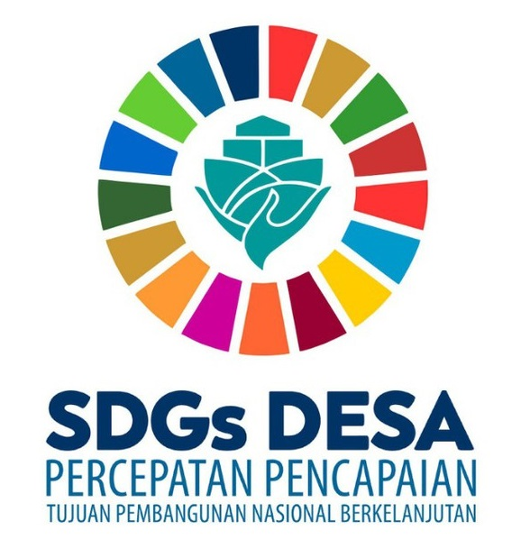
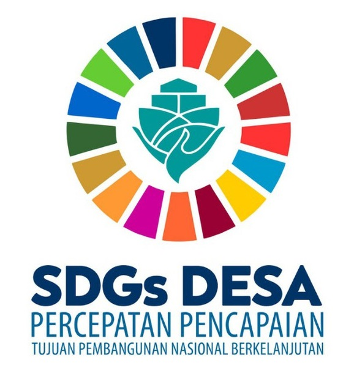

SDGS
Pada bulan September 2015, dalam Sidang Umum Persatuan Bangsa-Bangsa di New York, kepala negara dan perwakilan
dari 193 negara telah menyepakati deklarasi agenda 2030 untuk pembangunan berkelanjutan. Agenda ini merupakan
rencana aksi untuk people, planer and prosperity serta untuk penguatan perdamaian universal. Agenda itu dikenal
sebagai SDGS atau Sustainable Development Goals/ Pembangunan Berkelanjutan . Walaupun dalam 1 bidang terdapat 17
tujuan SDGS yang akan memengaruhi hasil di bidang lain dan bahwa pembangunan harus menyeimbangkan keberlanjutan
sosial, ekonomi, dan lingkungan. Negara-negara menyadari bahwa 17 tujuan SDGS saling terkait karena suatu
tindakan dalam satu area akan mempengaruhi hasil di area lain, dan pembangunan harus menyebabkan keberlanjutan
sosial, ekonomi, dan lingkungan. Dengan bantuan kreativitas, pengetahuan, teknologi, dan sumber daya keuangan
dari negara-negara di seluruh dunia, mereka akan berhasil untuk membuat dunia yang damai dan sejahterah.
Ada 17 tujuan SDGS yang saling terkait dan saling mendukung untuk mengatasi berbagai tantangan global yang kita
hadapi. Tujuannya meliputi:
- Tanpa Kemiskinan;
Kemiskinan adalah suatu situasi dimana seseorang tidak dapat atau mampu memenuhi kebutuhan hidup
sehari-harinya untuk hidup layak dan bermartabat. Walaupun kemiskinan sudah berkurang antara tahun 1990 dan
2015, kemiskinan masih termasuk salah satu tantangan terbesar di umat manusia. Oleh karena itu mereka
berkomitmen untuk mengakhiri kemiskinan dalam segala bentuk dan dimensinya pada tahun 2030. Ini melibatkan
penargetan yang paling rentan, peningkatan sumber daya dan layanan dasar, serta mendukung komunitas yang
terkena dampak konflik dan bencana terkait iklim.
-
Tanpa Kelaparan;
Jumlah orang yang kurang gizi telah berkurang hampir setengahnya dalam dua dekade terakhir karena pertumbuhan
ekonomi yang pesat dan peningkatan produktivitas pertanian. Sayangnya, kelaparan ekstrem dan malnutrisi tetap
menjadi hambatan besar bagi pembangunan di banyak negara. Diperkirakan ada 821 juta orang yang kekurangan gizi
kronis pada tahun 2017, seringkali sebagai konsekuensi langsung dari degradasi lingkungan, kekeringan, dan
hilangnya keanekaragaman hayati. Tidak hanya orang dewasa yang kekurangan gizi, bahkan anak di bawah usia lima
tahun hingga bayi juga mengalami kondisi yang rentan. Dengan kerja sama internasional mereka dapat memastikan
adanya investasi dalam dalam infrastruktur dan teknologi untuk meningkatkan produktivitas pertanian untuk
semua orang terutama anak-anak.
Dalam SDGS banyak negara melakukan kerja sama untuk mencapai tujuan ini. Salah satunya adalah Indonesia.
Terbarunya adalah dengan berkontribusi dalam Global Alliance Against Hunger and Poverty di Rio De Janeiro pada
bulan November 2024. Global Alliance Against Hunger and Poverty ini diusulkan oleh presiden G20 Brazil, dan
akan berfokus pada pembentukan aliansi global untuk mengumpulkan sumber daya dan pengetahuan guna menerapkan
kebijakan publik dan teknologi sosial yang terbukti efektif dalam mengurangi kelaparan dan kemiskinan di
seluruh dunia. Presiden Prabowo menegaskan komitmen Indonesia untuk mengatasi kelaparan dan kemiskinan sebagai
prioritas nasional, sehingga dia mengikuti program ini untuk membantu menghentikan kelaparan dan kemiskinan.
Disini Indonesia menerapkan pancasila sila ke 3 dan 4.
Pancasila ke 3 diterapkan dengan keinginan Indonesia untuk mengikuti kerja sama ini. Dengan persatuan ini
Indonesia dapat mengembangkan negaranya dan juga negara-negara lain, serta memiliki hubungan persaudaraan yang
lebih erat. Sila ke 4 ditunjukkan oleh perbuatan presiden 2024 Indonesia Prabowo. Ia memutuskan untuk
mengikuti kerjasama ini karena dia dapat melihat masalah kelaparan dan kemiskinan di negara kami dan seluruh
dunia. Oleh karena itu dia memilih untuk mengikuti kerja sama ini demi kebaikan negara dan dunia. Dia juga
menerapkan program pangan yang dapat memberikan bantuan pangan dan gizi kepada keluarga miskin. Dia juga
mengembangkan teknologi sosial dalam pengelolaan pangan dan mengurangi kemiskinan.
-
Kehidupan Sehat dan Sejahtera;
Tujuan kegiatan SDGS membuat komitmen yang berani untuk mengakhiri epidemi AIDS, TBC, malaria, dan penyakit
menular lainnya pada tahun 2030. Tujuannya adalah untuk mencapai cakupan kesehatan universal, dan menyediakan
akses terhadap obat-obatan dan vaksin yang aman dan terjangkau bagi semua orang. Sebagian besar penduduk dunia
masih kekurangan akses layanan yang vital. Maka berbagai faktor penentu kesehatan, termasuk faktor lingkungan
dan komersial sangat penting untuk mencapai tujuan ini.
- Pendidikan Berkualitas
Kemajuan pendidikan sudah lebih lambat terutama karena pandemi COVID-19 sebelumnya pada tahun 2019. Tanpa
langkah-langkah tambahan, diperkirakan 84 juta anak-anak dan kaum muda akan putus sekolah pada tahun 2030 dan
sekitar 300 juta siswa akan kekurangan keterampilan berhitung dan membaca dasar yang diperlukan untuk meraih
kesuksesan dalam hidup. Pendidikan adalah salah satu kunci dalam kehidupan manusia untuk mencapai berbagai
tujuan. Jika masyarakat mampu memperoleh pendidikan pastinya dunia kita dapat berkembang menjadi tempat yang
lebih canggih. Masyarakat juga mampu mengurangi kemiskinan di dunia ini dan terbentuk berbagai macam dampak
positif lainnya.
- Kesetaraan Gender;
Kesetaraan gender bukan hanya hak asasi manusia yang mendasar, tetapi juga landasan yang diperlukan untuk
dunia damai, adil, dan sejahtera. Walaupun sudah ada kemajuan tetap saja dunia ini belum mencapai kesetaraan
gender. Sebagian besar populasi dunia merupakan perempuan dan anak perempuan. Namun kesetaraan gender bisa
menghambat kemajuan sosial, dimana laki-laki biasanya mendapat penghasilan yang lebih besar dibanding
perempuan. Negara-negara dapat melakukan kepemimpinan politik, investasi dan reformasi kebijakan yang
komprehensif untuk menghilangkan masalah ini dan berhasil mencapai tujuan ke 5.
- Air Bersih dan Sanitasi Layak;
Air bersih dan sanitasi merupakan salah satu kebutuhan mendasar untuk kesehatan manusia. Permintaan air
mengingkat karena urbanisasi, pertumbuhan penduduk yang cepat, dan peningkatan kebutuhan air di sektor
pertanian, industri, dan energi. investasi dalam infrastruktur dan fasilitas sanitasi; perlindungan dan
pemulihan ekosistem terkait air; dan pendidikan kebersihan merupakan beberapa langkah yang diperlukan untuk
memastikan akses universal terhadap air minum yang aman dan terjangkau bagi semua orang pada tahun 2030.
Dengan kebijakan ini dunia dapat memiliki kemajuan positif.
- Energi Bersih dan Terjangkau;
Tujuan ini memastikan adanya energi bersih dan terjangkau untuk para penduduk. Energi merupakan salah satu
faktor penting dalam negara kita terutama pada era dunia kita sekarang. Seperti teknologi yang lebih canggih,
seperti mobil listrik untuk mengurangi globalisasi. Tidak hanya teknologi tapi juga dalam bidang lain. Yaitu
pertanian, bisnis, kesehatan, dan pendidikan. Tanpa adanya tujuan ini dunia akan lebih tergantung dengan bahan
bakar dan teknologi yang bisa mencemari lingkungan. Sayangnya dunia masih memiliki permasalahan ini. Dengan
adanya tujuan ini negara-negara akan memperluas infrastruktur dan meningkatkan teknologi untuk menyediakan
energi bersih dan terjangkau di semua negara.
- Pekerjaan Layak dan Pertumbuhan Ekonomi;
Memperluaskan lapangan pekerjaan pastinya memberikan semua warga kesempatan untuk memperoleh pekerjaan. Lebih
banyak penduduk yang memperoleh pekerjaan, lebih berkembangnya ekonomi di setiap negara sehingga seluruh
dunia. Adanya COVID-19 menyebabkan pengangguran global menurun secara signifikan. Namun, diperlukan lebih
banyak kemajuan untuk meningkatkan kesempatan kerja, terutama bagi kaum muda, mengurangi lapangan kerja
informal dan ketimpangan pasar tenaga kerja (terutama dalam hal kesenjangan upah berdasarkan gender),
mendorong lingkungan kerja yang aman dan terjamin, serta meningkatkan akses ke layanan keuangan untuk
memastikan pertumbuhan ekonomi yang berkelanjutan dan inklusif.
- Industri, Inovasi dan Infrastruktur;
Pertumbuhan ekonomi, pembangunan sosial, dan aksi iklim sangat bergantung pada investasi dalam infrastruktur,
pembangunan industri berkelanjutan, dan kemajuan teknologi. Untuk mencapai dunia yang cepat berkembang
diperlukan ketiga faktor ini. Penurunan manufaktur yang disebabkan oleh pandemi telah menyebabkan dampak
serius pada ekonomi global. Hal ini terutama disebabkan oleh inflasi tinggi. Oleh karena itu mereka berencana
untuk berinvestasi dalam infrastruktur irigasi, energi, teknologi, dan transportasi untuk mencapai pembangunan
berkelanjutan dan membahayakan masyarakat di banyak negara.
- Berkurangnya Kesenjangan;
Kesenjangan mengancamkan pembangunan sosial dan ekonomi jangka panjang, merugikan persatuan global dan
pengurangan kemiskinan. Pandemi telah menyebabkan peningkatan ketimpangan antara negara terbesar. Maka mereka
akan mengurangi ketimpangan dengan distribusi sumber daya yang adil, investasi dalam pendidikan dan
pengembangan keterampilan, penerapan langkah-langkah perlindungan sosial, memerangi diskriminasi, mendukung
kelompok-kelompok terpinggirkan, dan mendorong kerja sama internasional untuk perdagangan yang adil dan sistem
keuangan.
- Kota dan Permukiman yang Berkelanjutan;
Tujuan ini menekankan pentingnya membuat kota dan pemukiman manusia inklusif, aman, tangguh, dan
berkelanjutan. Akan tetapi, banyak dari kota-kota tersebut tidak siap menghadapi urbanisasi yang pesat.
Mengakibatkan meningkatnya permukiman kumuh. Sehingga mereka mengubah cara ruang perkotaan dibangun dan
dikelola dalam setiap negara.
- Konsumsi dan Produksi yang Bertanggung Jawab;
Akhir-akhir ini planet kita memiliki sifat konsumtif yang cukup besar. Planet kita kehabisan sumber daya,
tetapi populasi terus bertambah. Jika populasi terus berkembang dengan pesat dan planet kekurangan sumber
daya, tentunya akan mengakibatkan beberapa dampak negatif. Kita perlu mengubah kebiasaan konsumsi kita dan
mengalihkan pasokan energi kita ke yang lebih berkelanjutan. Kita bisa melakukan ini dengan melakukan daur
ulang, mengurangi limbah, dan memanfaatkan sumber daya alam secara efisien.
- Penanganan Perubahan Iklim;
Setiap negara akan mengalami perubahan iklim dalam beberapa bentuk. Perubahan iklim bisa terjadi kapan saja
dan di mana saja dan kita bisa saja belum siap untuk menghadapinya. Perubahan iklim disebabkan oleh aktivitas
manusia dan mengancam kehidupan di bumi. Dengan meningkatkan emisi gas rumah kaca, perubahan iklim dapat
terjadi pada tingkat yang jauh lebih cepat. Jika tidak diatasi, perubahan iklim akan merusak pembangunan dan
perkembangan dunia kita setelah bertahun-tahun. Kita dapat menghentikannya dengan peningkatan ambisi, mencakup
seluruh perekonomian dan bergerak menuju pembangunan yang tangguh terhadap iklim, sembari menguraikan jalur
yang jelas untuk mencapai emisi nol bersih.
- Ekosistem Lautan;
Tujuan ini bertujuan untuk melestarikan dan memanfaatkan secara berkelanjutan lautan, samudra, dan sumber daya
laut. Lautan merupakan bagian penting di bumi. Bahkan laut menutupi tiga perempat permukaan bumi. Mereka
menyediakan sumber daya alam utama termasuk makanan, obat-obatan, biofuel, dll. Bila laut tercemar, untuk
memulihkannya akan menjadi proses yang panjang dan sulit. Sebelum kondisi laut memburuk kita dapat bertindak
dengan mengelola perikanan, mengurangi polusi laut, dan melindungi ekosistem laut.
- Ekosistem Daratan;
Sasaran 15 adalah tentang pelestarian kehidupan di daratan. Tujuan ini menekankan pentingnya melindungi,
memulihkan, dan mempromosikan penggunaan berkelanjutan ekosistem darat. Ekosistem bumi sangat penting untuk
menopang kehidupan manusia, berkontribusi terhadap lebih dari setengah PDB global dan mencakup beragam nilai
budaya, spiritual, dan ekonomi. Namun yang menghentikannya adalah perubahan iklim, polusi, dan keanekaragaman
hayati. Beberapa hal yang dapat kita lakukan untuk membantu meliputi daur ulang, mengonsumsi makanan berbasis
lokal yang bersumber secara berkelanjutan, dan hanya mengonsumsi apa yang kita butuhkan.
- Perdamaian, Keadilan dan Kelembagaan yang Tangguh;
Tujuan 16 adalah tentang mempromosikan masyarakat yang damai dan inklusif, menyediakan akses terhadap keadilan
bagi semua orang, dan membangun lembaga yang efektif, bertanggung jawab, dan inklusif di semua tingkatan.
Pemerintah, masyarakat sipil, dan masyarakat perlu bekerja sama untuk menemukan solusi yang langgeng bagi
konflik dan ketidakamanan. Memperkuat supremasi hukum dan memajukan hak asasi manusia adalah kunci dari proses
ini, seperti juga mengurangi aliran senjata ilegal, memerangi korupsi, dan memastikan partisipasi yang
inklusif setiap saat.
- Kemitraan untuk Mencapai Tujuan.
SDGs ini bertujuan untuk memperkuat kemitraan global dalam mendukung dan mencapai tujuan pembangunan
berkelanjutan melalui kerja sama internasional, dukungan finansial, perdagangan yang adil, dan berbagi
teknologi serta pengetahuan. Adanya kemitraan global yang kuat dan dukungan yang koheren di berbagai bidang
ini. Tujuan ini juga ingin memperkuat mobilitas sumber daya domestik, termasuk melalui dukungan internasional
kepada negara-negara berkembang,